1 · Recept
Přehlednější karta receptu
- Údaje Hotové za, Porce a Náročnost jsou v jednom kompaktním řádku.
- Nadpisy „Ingredience“ a „Postup“ jsou u všech receptů stejně velké.
- Skupiny jako „Na těsto“ jsou výraznější, množství tučně a kroky postupu mají fialová čísla.
- Na počítači se dlouhé seznamy surovin rozdělí do dvou sloupců.
- Tlačítko tisku se jmenuje „Vytisknout / PDF“ a funguje stejně jako dřív. Nová tlačítka se do tisku nedostanou.
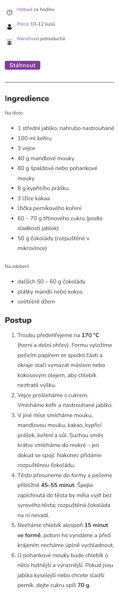
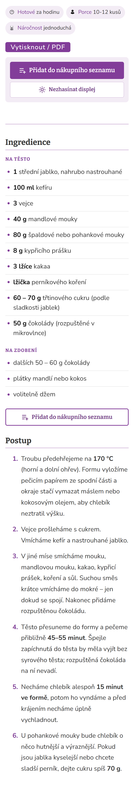
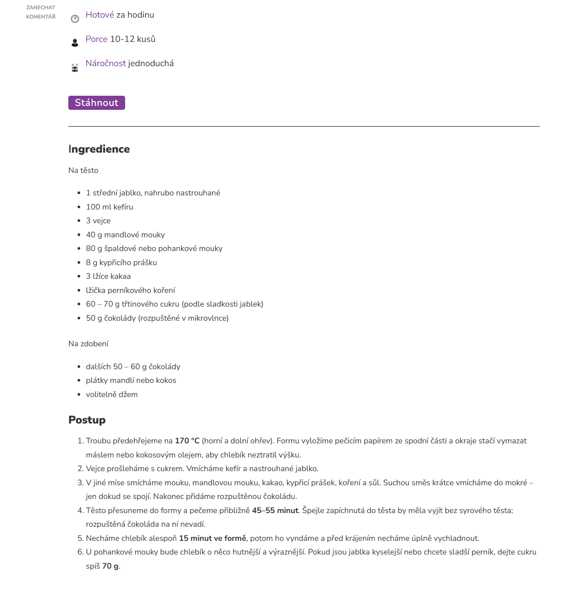
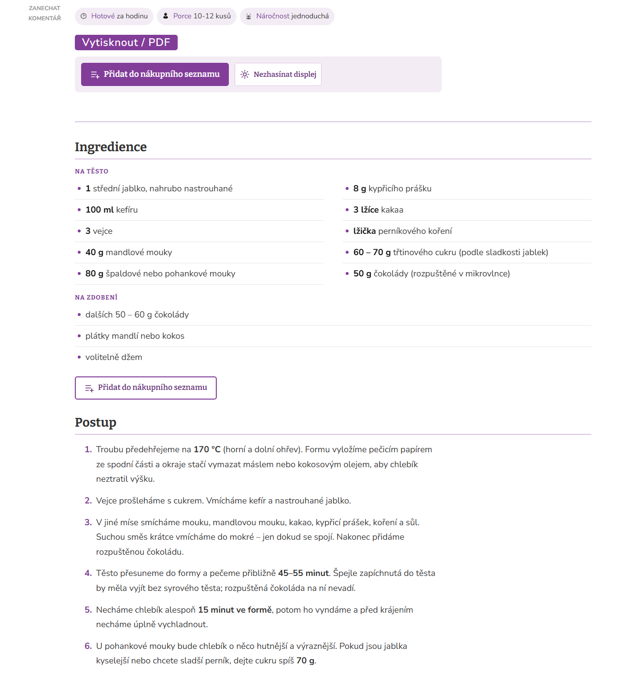
2 · Přidání
Přidání receptu do seznamu
- Po kliknutí se čtenářce zespodu vysune okno. Nejdřív si nastaví, kolik toho nakupuje: počet porcí, nebo u receptů na kusy poloviční až trojnásobné množství. Množství se samy přepočítají.
- Zaškrtnuté je všechno kromě věcí, které má doma skoro každý (sůl, pepř, voda, olej), a volitelných surovin. Každou položku jde jedním klepnutím přepnout.
- U článků s více recepty (meal prep) si nejdřív vybere, které recepty bude vařit.
- Po přidání uvidí potvrzení s odkazem na seznam a tlačítkem „Vrátit“. U receptu je pak vidět, že ho už v seznamu má.
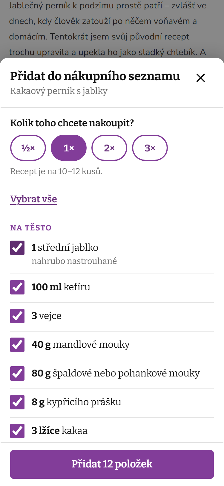
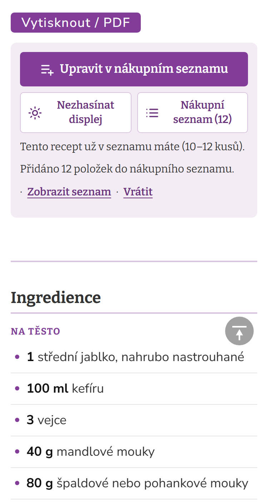
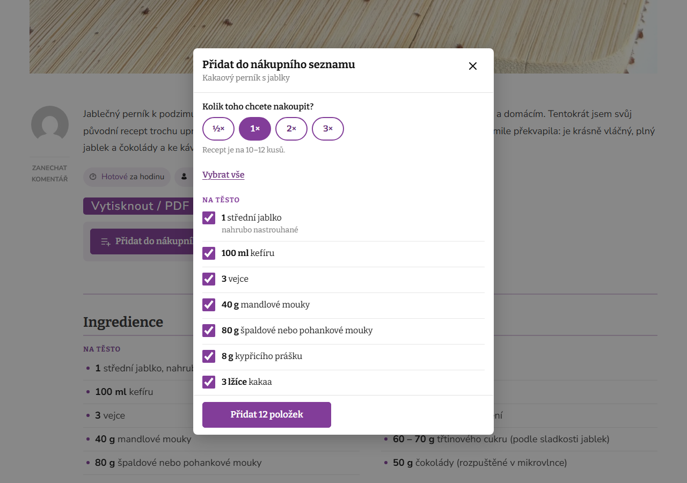
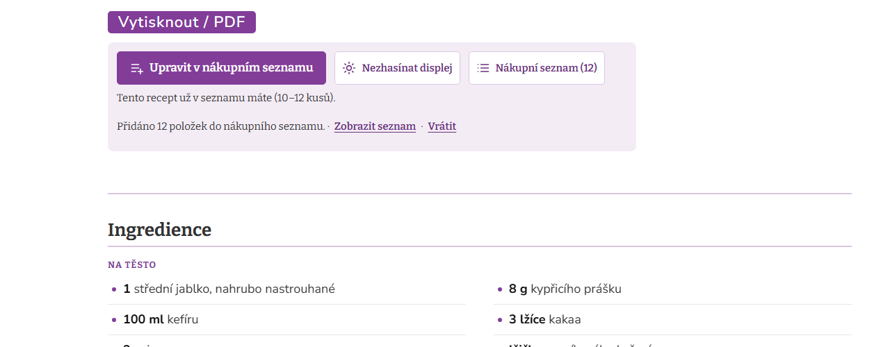
3 · Nákup
Stránka Nákupní seznam
- Seznam se řadí podle oddělení v obchodě (ovoce a zelenina, mléčné výrobky, pečení…), nebo podle receptů.
- Stejné suroviny z víc receptů se sečtou. V ukázce jsou to jablka a vejce z perníku i z lívanců, každé jen na jednom řádku.
- V obchodě si čtenářka položky odklepává a koupené se přesunou dolů do „Koupeno“. Omylem se nic nesmaže.
- Seznam jde zkopírovat, vytisknout a na telefonu poslat přes WhatsApp, Messenger nebo SMS. Dají se do něj dopsat i vlastní položky, třeba banány na snídani.
- Na nákup je tu větší písmo a tlačítko „Nezhasínat displej“, aby telefon v obchodě nezhasínal.
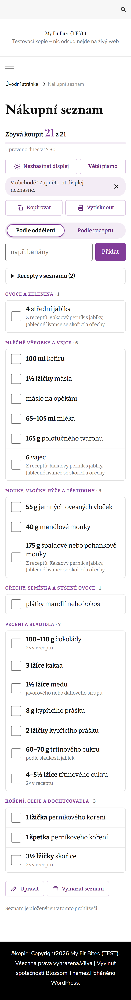
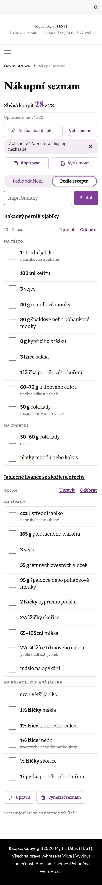
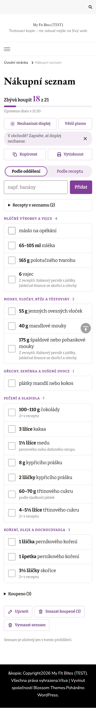
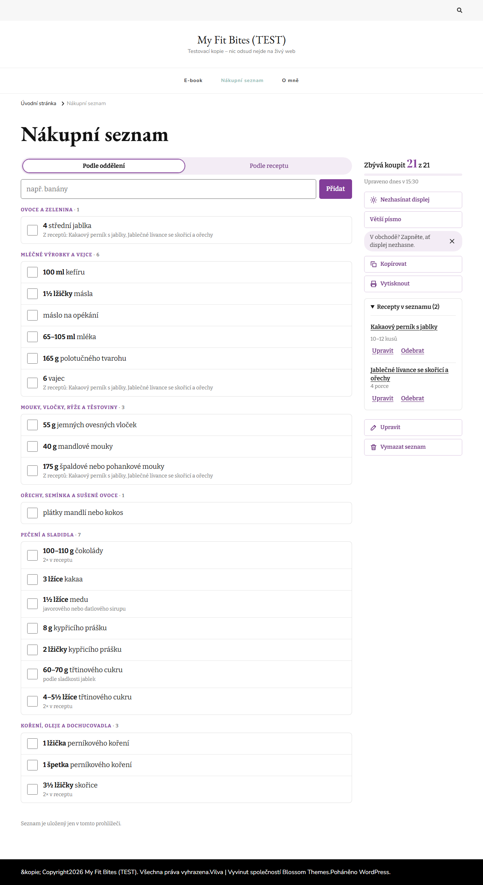
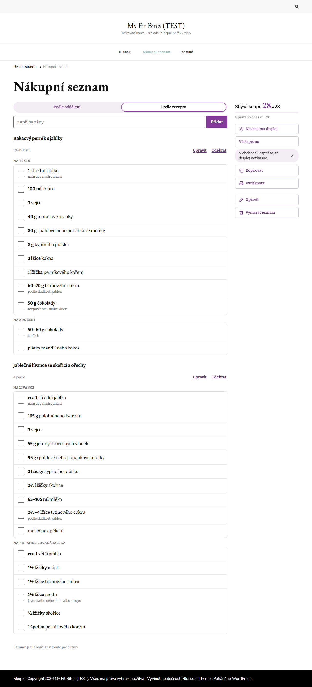
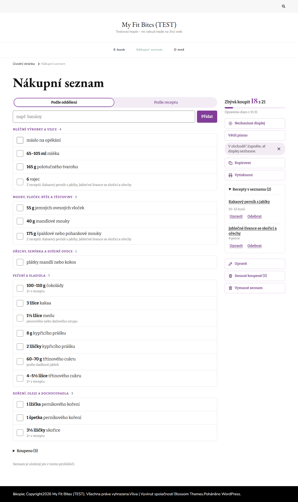
4 · Spuštění
Co dál
Podle tvých odpovědí
- Nový vzhled karet receptů je zapnutý.
- Řádek Hotové za · Porce · Náročnost je zmenšený do jednoho kompaktního řádku.
- Tlačítko „Stáhnout“ se jmenuje „Vytisknout / PDF“. Samotné recepty se kvůli tomu nemění.
Každou z těch změn jde kdykoliv vypnout v Nastavení → Nákupní seznam.
Spuštění
Plugin nainstaluju, vytvořím stránku Nákupní seznam a přidám ji do menu. Zabere to asi 20 minut. Pak to spolu vyzkoušíme na telefonu na pár receptech.
Drobnost v receptech
U 7 receptů je postup mimo část, kterou tiskne „Vytisknout / PDF“, takže se z nich vytisknou jen suroviny. Pošlu ti jejich seznam a ukážu, jak to v editoru opravit.
Soukromí čtenářek
Nikdo se nemusí registrovat a nic se nesleduje ani neposílá jinam. Seznam zůstává jen v telefonu nebo počítači čtenářky. Když web otevře přímo z Instagramu, stránka jí připomene, ať si seznam pošle přes „Sdílet“, protože v běžném prohlížeči by ho pak nenašla.
Další krok: jídelníček na týden
Seznam je postavený tak, aby se na něj jídelníček dal napojit bez předělávání. Návrh, jak by plánování fungovalo, ti pošlu stejně jako tenhle náhled.